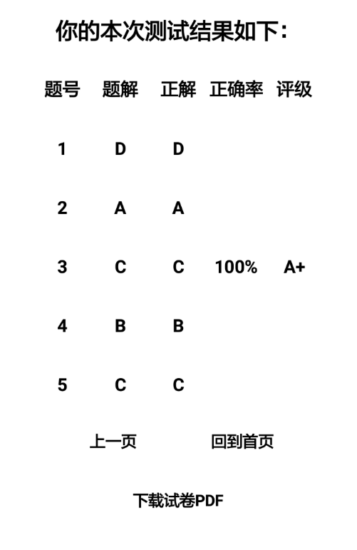
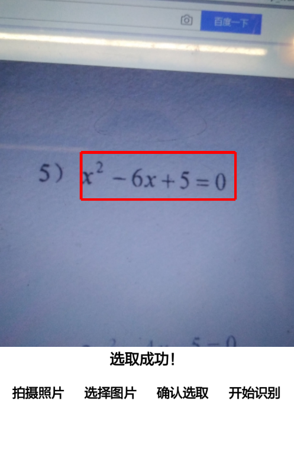
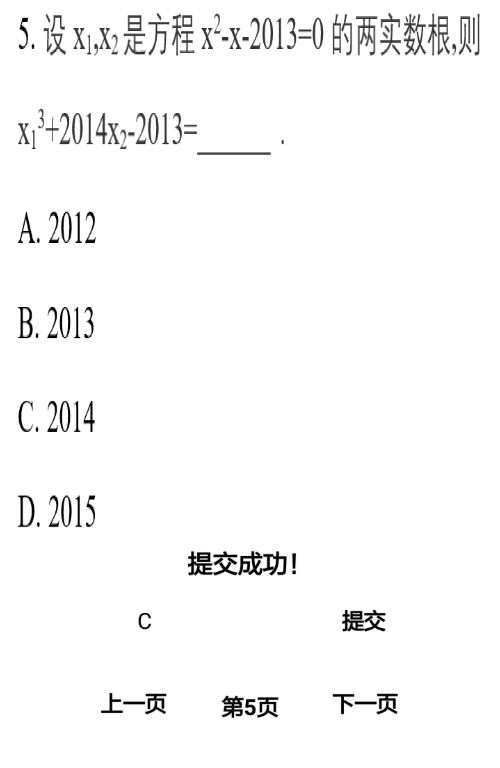

新型智能题库
通过扫描学生在课内学习的一元二次方程组，裁剪，并分析该题目类型上传至云端数据库寻找相应练习题目，学生可在Android客户端上查看配套的5道配套练习题，进入之后可以作答并且完成习题后可在最终页面看到答题的正确率、正确题数以及答题等第，并且可以看见之前作答的答案和正解，最后题目也可以以PDF文档的形式供用户下载。
该题库的主要作用就是希望能通过AI智能处理使得学生们可以更加方便的学习数学，得到更加精确的举一反三题目，此智能题库可以针对学生弱项根治错题，有效提升学习成绩。


